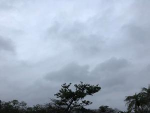
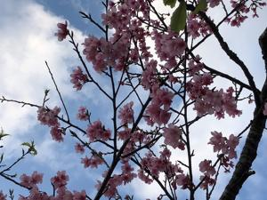

うるがいの話 ある日
最新: 工工四諦める【うるがいの話 ある日】とは 一日だけのプログです
『うるがいの話』の最新一日だけのプログで、通信料が少なく経済的だ。カニの画像をクリックすると全ての日付が載る『うるがいの話』サイトを表示します
|
|
【うるがいの話】 うるがい(ｳﾙｶﾞｲ urugai)とは、『もずくがに』の名前でとても大きくなります。 |
|---|---|
|
|
【カミマヤーの話】 猫のことを方言でマヤーといいます。カミマヤー（kamimayaa）とは、神の猫のことです。 |
|
【たながぁの音楽】 たながぁ（ﾀﾅｶﾞｰtanagaa）とは手長えびのことで、何種類かあり大きいのは車 エビぐらいになります。 |

|
【ぶながぁの話】 ぶながー(bunagaa)とは、赤い髪の毛、赤い身体、そして身長は１ｍ２０ｃｍ ぐらい、川の蟹を食べているの目撃された。場所は沖縄県国頭郡大宜味村のと ある村僕の隣近所に住んでいる爺さんから、聞いた話です。 |
|
|
【ギーマの話】 ギーマ(giima)とは、山原の里山に咲くスズランに似た、 花を付けます。実は食べられます、 気が付くと口の周りが紫になっています。 |
2022年02月18日 (金）工工四諦める
18:25

ユチューブで『三線工工四』と検索すると 凄い動画 を見つける。本当にあの
工工四なのである。まープロだが。で、私にはとてもとても諦めた。
はじめまして、現役の三線教師です。
これまで約３００曲の民謡、島唄POPS、J-POPなどの工工四を作成。
フルコーラス歌って弾ける工工四とお手本音源をつくります！
三線教師・師範免許所持。
スキル/ツール
エレキベース：30年 三線：18年 DTM：12年
ん？、
DTMとは（Desktop Music：デスクトップミュージック）を略した
用語で、パソコンを使って、音楽や楽曲を作る行為全般
の総称となります。
ホー
資格
三線教師免許 三線師範免許 三線優秀賞 三線最高賞
受賞歴/執筆歴/講演歴
三線優秀賞 三線最高賞

ついでに、私の場合は
始めまして、無職の還暦を過ぎた老人です。
三線歴（３か月少々:2021.10.29から三線のチンダミを始める)
スキル/ツール
ギター:（半年少々:2021.05.12からギターの弦を買う)
禁じられた遊び（愛のロマンス）の後半は、
まだ弾けません（多分永久に）、
無料楽譜ソフト:TuxGuitar
資格 三線に関しては無免許
１８時０４分 ビットコインの総資産 ￥１３、６２５↓ウクライナ危機で